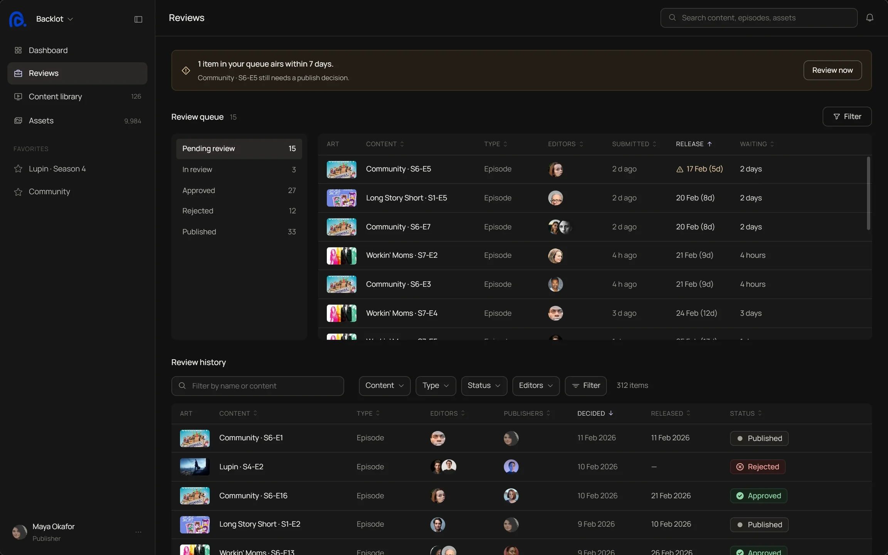

Backlot, a CMS for streaming services
Rejections that tell the editor exactly what to fix
Backlot is where streaming services prepare films and series for release, one region at a time. I designed the review loop between editor and publisher, so a rejection is a list of reasons pinned to fields, not a vague note.

The work is not hard. The loop is.
The problem
Every time something comes back, both sides redo work, and the release date does not move. The editor guesses what to fix, the publisher checks everything again.
North star
Every round of review should be the last one
Every decision on this page answers one question: does it remove a round of review? Each feature below shows which part of the loop it cuts.
Research
What the domain taught me, and what it changed
Desk research on how releases work region by region, then eight tools compared on how they handle a rejection.
FindingMetadata lives on three levels: series, season, episode. Mistakes come from the wrong level, not the wrong value.
→DecisionThe page always shows where a field lives, so nothing is filed one level off.
FindingAlmost every field changes by region: title, synopsis, rating, artwork.
→DecisionRegion became the scope you work in, not a filter you forget to switch.
FindingEvery tool lets you comment on a field. None turns a rejection into reasons it counts.
→DecisionA rejection is a list of reasons, each pinned, categorised and counted.
| Tool | Comment on a field | Categorised reason | Each reason its own fix | Reasons counted | Counts feed a check |
|---|---|---|---|---|---|
| Contentful, Contentstack | – | – | – | ||
| Strapi, Directus | – | – | – | – | |
| Frame.io, Ziflow | – | – | |||
| Brightcove | – | – | – | – | |
| GitHub pull requests | – | – | |||
| Backlot |
Where Backlot loses: Frame.io pins a note to the exact frame. What I haven't done yet: sit with an editor.
Two roles
One episode, two people asking different questions
“What exactly do I fix, and is it ready now?”
Works region by region, many episodes at once.
- Which field each reason is on
- What the region still needs
- Submit only what changed
“What changed since I last looked?”
Decides before a release date, can't re-check everything.
- Only the fields that came back
- Who changed what and when
- Reject with reasons, not a note
Feature 01
A rejection is a list of reasons
Each reason is pinned to a field and has a category. The editor fixes them one by one, and the publisher re-checks only those fields.
Feature 02
You work in one region at a time
Almost every field changes by region, so region is the scope of the page. Switching it changes everything that differs, and nothing else.
Feature 03
Rules check before a person does
Each region lists what has to be true before release. A check passes the moment its field is valid, so the editor submits only what is ready.
Feature 04
AI suggests, a person decides
A wrong auto-fill is an error nobody sees. So AI only flags what looks wrong, and rules and AI never share a list.
Feature 05
Most files place themselves
Processing reads each file's technical metadata and assigns what it can match. Only the files it can't place wait for the editor.
Feature 06
The thumbnail that wins, per region
Your text: how the winning artwork is chosen and why it matters.
Feature 07
The queue is sorted by what airs first
The publisher sees the one item that airs within seven days and still needs a decision, before anything else.

What I changed
Some things I removed
Each one worked on paper, and each one cost the editor a round.
AI that fills fields
A wrong auto-fill is an error nobody sees. AI now flags, and a person decides.
Region as a filter
Almost every field changes by region, so region became the scope you work in.
One rejection comment
A single note left the editor guessing. It became reasons pinned to fields.
Reflection
What I would test next
Do the categories match reality?
Sit with publishers and check that the rejection categories cover what they actually send back.
Do editors trust the split?
Fields they fill vs fields the upload filled. If they re-check everything, the split failed.
Next, 02 / BİLGE
Customs approvals where every change carries a reason.
Pending Approval
Thanks for reading. If the work fits your team, I'd like to hear about the role.
a.egecoskun@gmail.com